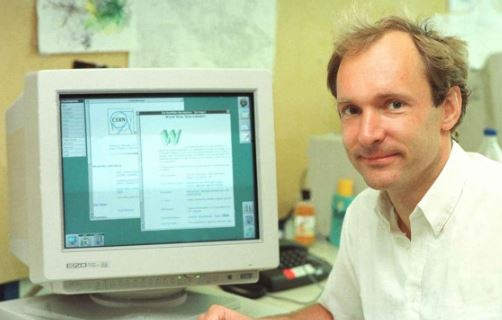

The World Wide Web
The world wide web, or WWW, was created as a method to navigate the now extensive system of connected computers. Tim Berners-Lee, a contractor with the European Organization for Nuclear Research (CERN), developed a rudimentary hypertext program called ENQUIRE.
The program was designed to make information readily available to users, and to allow a user to explore relationships between different pages (i.e. clicking to get to a different section of a website). By 1990, with the help of Robert Cailliau, Berners-Lee developed the skeletal outline of the internet, including a web browser and web server.
Unfortunately, the world wasn't ready for his ideas. The web was still a series of simple text pages, difficult to navigate, and inaccessible to most people. But all that changed in 1993, with the release of the Mosaic web browser, which allowed users to explore multimedia online. 1993 also saw the introduction of the first modern search engines. Though early search engines were primitive, mostly manual, and primarily indexed only titles and headers, in 1994 WebCrawler began to "crawl" the net, indexing entire pages of active websites. This technology opened the door for more powerful search engines, and made it possible to easily search through vast amounts of connected information.
Unfortunately, the world wasn't ready for his ideas. The web was still a series of simple text pages, difficult to navigate, and inaccessible to most people. But all that changed in 1993, with the release of the Mosaic web browser, which allowed users to explore multimedia online. 1993 also saw the introduction of the first modern search engines. Though early search engines were primitive, mostly manual, and primarily indexed only titles and headers, in 1994 WebCrawler began to "crawl" the net, indexing entire pages of active websites. This technology opened the door for more powerful search engines, and made it possible to easily search through vast amounts of connected information.
In this same year, Berners-Lee founded the world wide web Consortium (W3C) to help further develop ease of use and accessibility of the web, and made it a standard that the web should be available to the public for free and with no patent.